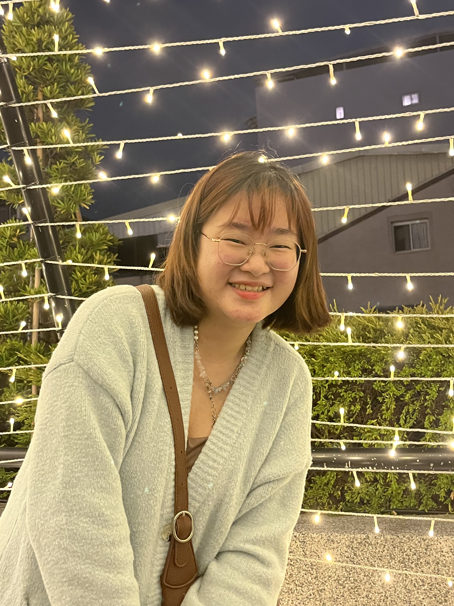
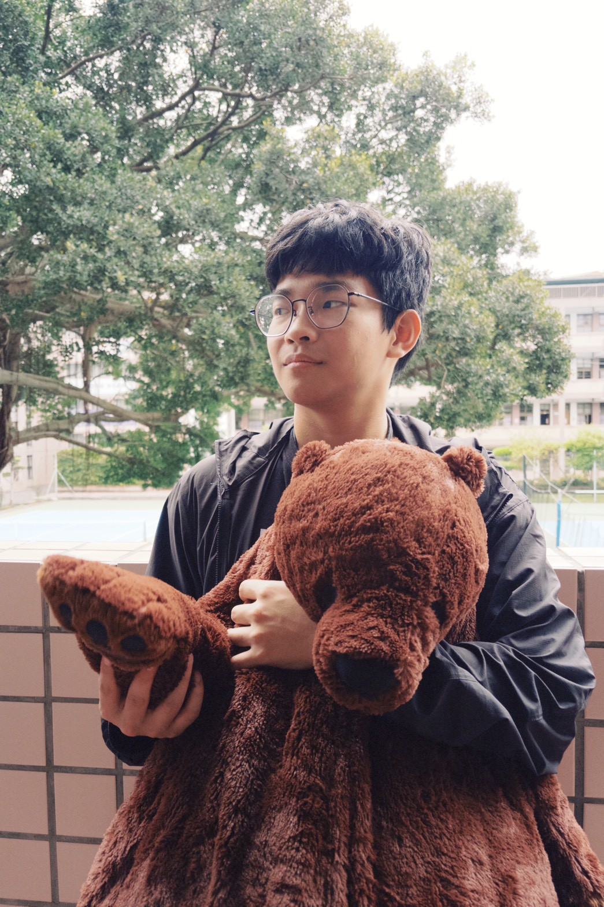
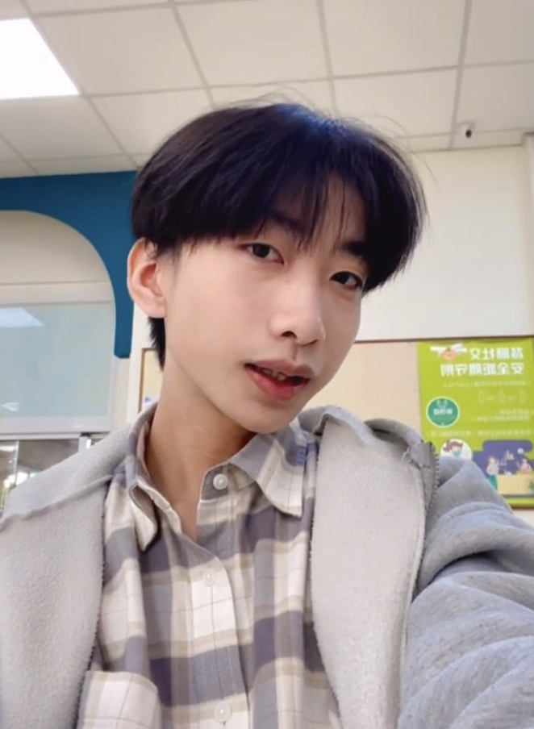
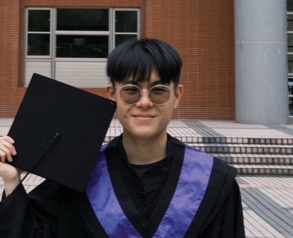
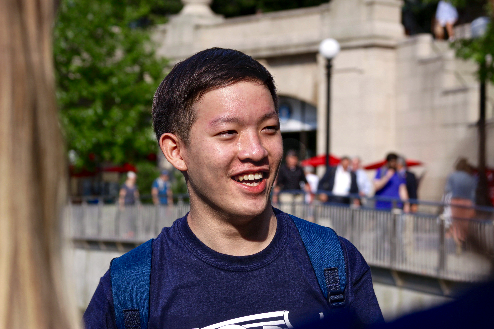

組織架構 & 團隊成員

電機工程學系
曾是弱勢家庭的孩子，因遇見一位願意理解自己的數學老師而改變人生方向。參與教育部交換計畫赴美後，深感偏鄉孩子不只缺資源，更缺眼界。希望透過營隊讓孩子第一次相信「原來我也可以」，踏出追夢的第一步。

社會工作學系
身為社工系與輔導科雙修師資生，曾在黑暗中掙扎卻感受過微光的力量。深刻體悟「減少不平等」不只是政治術語，而是對待每個不同生命的方式。期望以體驗教育與 SEL，將 SDGs 轉化為孩子能觸碰的日常。

醫學系
國中時家中變故，幸有班導全力協助才得以翻轉人生。深信「教育是翻轉階級的根本」。在美國一行中認識總召龍建治，被其對教育的熱忱打動，決定以豐富的營隊帶隊經驗加入，希望讓孩子拓展視野、啟發思考。

機械工程學系
國小時對學習感到排斥，國中遇到用生活實例教數學的老師而改變態度；高中接觸生活科技後發現學習可以很有趣。希望設計結合手作與程式的課程，讓孩子透過實作體驗，發現學習不只是課本與考試。

生物醫學科學系
出生於單親家庭，從小在花蓮後山的自然環境中成長，與偏鄉孩童有著天然的共通點。高中一年的科展研究鍛鍊出極大的耐心與抗壓性。期望以陪伴代替說教，在短短幾天的營隊中帶給孩子充滿安全感且啟發好奇心的溫暖時光。

餐旅管理學系
成長過程中曾對自我價值感到懷疑，直到遇見一位願意傾聽的老師才逐漸建立自信。觀察到許多孩子並非缺乏能力，而是缺少被看見的機會，希望透過活動引導孩子學習合作與表達。

化學工程系
求學階段雖成績不錯，卻時常不知如何與人建立關係而感到不自在。深知一個溫暖的陪伴對覺得自己被遺忘的孩子有多重要。希望以化工專業與服務熱忱，成為連結知識與學生的橋樑。

企管暨社工系
堅信「一個人可以走得快，但一群人可以走得遠」。在向賢邀請下加入，將 SEL 與修復式正義的理念帶入營隊，希望把 SDGs 轉化為孩子能理解與參與的體驗，引導他們在日常中實踐關懷與責任。

應用數學系
從普仁夏令營的隊輔到交大返鄉服務，每次活動帶領都讓他更確信陪伴的力量。擅長設計破冰活動、美宣視覺與舞蹈教學，讓他成為最能打破孩子心防的那個人。希望把這些累積的活動能量，帶給資源相對匱乏的偏鄉孩子。
資訊工程學系
曾是縮在角落、不諳社交的孩子，因家境壓力學會隱忍，直到國中遇見一位用恆久耐心拆掉心牆的老師。因為走過那段幽暗，更能察覺營隊中那些眼神藏著防備的孩子。希望以哥哥的身分陪伴沉默的孩子，讓他們知道自己並不孤單。

醫學系
每次陪伴和幫助別人時，反而覺得自己獲得更多。在臨床學習中發現，醫療更多是陪伴與理解；若能在孩子年幼時種下對健康的認識，就是一種預防醫學。希望以真誠的態度對待孩子，成為願意認真聽他們說話的大哥哥。